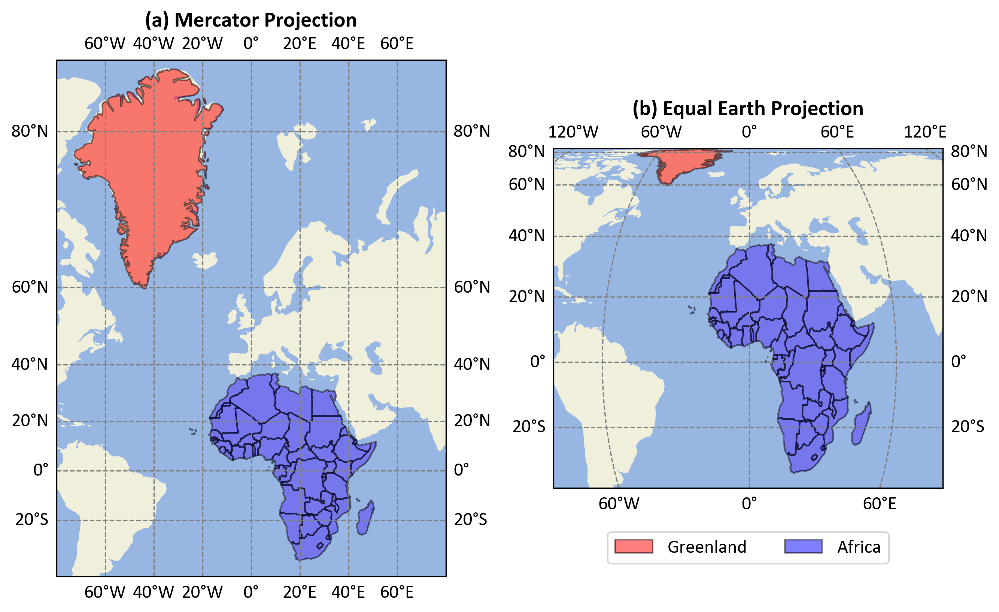

Please be aware that these lecture notes are accessible online in an ‘early access’ format. They are actively being developed, and certain sections will be further enriched to provide a comprehensive understanding of the subject matter.
Cylindrical projections are a family of map projections that transform the globe onto a cylinder, which is then unrolled into a flat map. These projections are characterized by meridians (lines of longitude) that are equally spaced parallel lines, and parallels (lines of latitude) that are straight lines perpendicular to the meridians [Kumar et al., 2023, McHaffie et al., 2023].
To better understand the concept of cylindrical projections, we can visualize the process using a central cylindrical projection method. Fig. 2.21 illustrates this method:
Fig. 2.21 Illustration of Central Cylindrical Projection: A light source at the center of a semitransparent globe casts shadows onto photographic film wrapped cylindrically around it, demonstrating how Earth’s surface can be mapped onto a flat plane. Credit: Wikipedia.org. Link to Image.#
This illustration demonstrates the central cylindrical projection method used in cartography:
Semitransparent Globe: The figure shows a globe with a grid of meridians and parallels, representing Earth’s surface.
Light Source: A light is placed at the center of the globe.
Photographic Film: A cylindrical piece of photographic film is wrapped around the globe.
Projection Process: The light source projects the grid from the globe onto the cylindrical film, resulting in a distorted representation of Earth’s surface on the flat film.
This method demonstrates how a three-dimensional object (the globe) can be projected onto a two-dimensional surface (the film), which is a fundamental concept in map-making. The central cylindrical projection is particularly useful for understanding how different map projections handle the challenge of representing the curved surface of the Earth on a flat plane.
While this visual aids in understanding the concept, it’s important to note that modern map projections are mathematically derived rather than physically projected. The actual equations and processes used in creating maps like the Mercator or Plate Carrée projections are more complex and precise than this physical analogy suggests.
2.5.2. Characteristics of Cylindrical Projections#
Cylindrical projections are a family of map projections that conceptually involve wrapping a cylinder around the Earth and projecting its features onto this surface. When the cylinder is “unrolled,” it creates a rectangular map with distinct characteristics [Hinks, 2016, Robinson, 1995, Snyder, 1987]:
Non-Conformal Nature:
Most cylindrical projections (with notable exceptions like the Mercator) are non-conformal, meaning they do not preserve angles. This results in shape distortion, which becomes more pronounced as you move away from the equator. For instance, landmasses near the poles appear stretched horizontally compared to their actual shape.
Non-Equal-Area Property:
Cylindrical projections typically do not preserve area accurately. Regions far from the equator appear disproportionately large compared to their true size. This effect is particularly noticeable in the Mercator projection, where Greenland appears similar in size to Africa, despite being about 14 times smaller in reality [Crew, 2019].
Fig. 2.22 compares the sizes of Greenland and Africa using two different map projections:
Mercator Projection (Left):
Distortion: Greenland appears almost as large as Africa.
Usage: Commonly used for navigation because it preserves angles and directions but distorts size, especially near the poles.
Equal Earth Projection (Right):
Distortion: Africa is shown significantly larger than Greenland, reflecting their true relative sizes.
Usage: Designed to provide a more accurate representation of area, reducing size distortion.

Fig. 2.22 Comparison of Greenland and Africa Sizes in Different Projections.#
Equator Representation:
The equator is consistently depicted as a straight horizontal line across the map. It is the only parallel of latitude that maintains true scale throughout the projection. This makes cylindrical projections particularly useful for mapping equatorial regions with minimal distortion.
Meridian Representation:
Meridians (lines of longitude) are represented as equally spaced vertical lines. This creates a grid-like appearance on the map, with all meridians intersecting parallels at right angles. While this makes for a visually organized map, it contributes to the distortion of shapes and areas, especially at high latitudes.
Pole Representation:
A significant limitation of cylindrical projections is their inability to show the poles accurately. As latitude (\(\phi\)) approaches ±90°, the mathematical function \(\tan(\phi)\) approaches infinity. In practice, this means that the poles are either not shown at all or are represented as lines stretching across the entire width of the map, rather than as points.
Scale Variation:
The scale of the map varies depending on the latitude. While the scale along the equator remains constant, it increases dramatically as you move towards the poles. This variation in scale is a primary reason for the area distortion characteristic of cylindrical projections.
Rhumb Line Representation:
In some cylindrical projections, like the Mercator, rhumb lines (lines of constant bearing) appear as straight lines. This property made the Mercator projection invaluable for navigation before the advent of GPS technology.
Symmetry:
Cylindrical projections typically exhibit symmetry about the equator and the central meridian. This symmetry can be visually appealing and useful for certain applications, but it also means that distortions are mirrored in the northern and southern hemispheres.
Understanding these characteristics is crucial for cartographers and map users alike. It allows for informed decisions about when to use cylindrical projections and how to interpret the information they present. While cylindrical projections have limitations, particularly in representing polar regions and global scale relationships, they remain valuable for specific applications, especially those focused on equatorial or tropical regions [Robinson, 1995].
Cylindrical projections, particularly the central cylindrical projection, exhibit significant distortion that increases rapidly with distance from the equator. This distortion is primarily due to the mathematical properties of the projection, specifically the behavior of the \(\tan(\phi)\) function in its formulae [Hinks, 2016, Wikipedia, 2024].
Distortion Characteristics:
Minimal Distortion at the Equator: The equator (0° latitude) serves as the line of tangency between the cylinder and the globe, resulting in minimal distortion along this line [Hinks, 2016, Wikipedia, 2024].
Increasing Distortion with Latitude: As latitude increases, the distortion becomes more pronounced:
At approximately 45° latitude, the scale is doubled compared to the equator.
Beyond 60° latitude, the distortion becomes severe, making these projections impractical for high-latitude regions.
Pole Representation: In the central cylindrical projection, the poles cannot be represented as they would theoretically be infinitely far from the equator.
The distortion in cylindrical projections is mathematically described by the secant of the latitude (\(\sec(\phi)\)). For the central cylindrical projection, the north-south stretching is proportional to \(\tan(\phi)\), which grows even more rapidly than \(\sec(\phi)\). Due to these distortion characteristics, the central cylindrical projection is seldom used for world maps [Hinks, 2016].
Cylindrical projections are widely used in cartography for their unique characteristics and applications. Some of the most popular cylindrical projections include:
Mercator Projection
Transverse Mercator Projection
Equidistant Cylindrical and Plate Carrée Projections
The Mercator projection is a cylindrical map projection presented by Flemish geographer and cartographer Gerardus Mercator in 1569 [Snyder, 1987]. It is conformal, preserving angles and local shapes, which made it the standard map projection for nautical purposes [Wikipedia, 2024].
The equations for the Mercator projection are:
(2.6)#\[\begin{split}\begin{cases}
x &= R(\lambda - \lambda_0)
\\ ~\\
y &= R \ln\left(\tan\left(\dfrac{\pi}{4} + \dfrac{\phi}{2}\right)\right)
\end{cases}\end{split}\]
Where:
\(R\) is the radius of the Earth
\(\lambda\) is the longitude
\(\lambda_0\) is the central meridian
\(\phi\) is the latitude
Characteristics of Mercator:
Conformal: The projection preserves local shapes and angles, making it valuable for navigation [Pijls, 2001].
Distortion: Area distortion increases dramatically towards the poles. Landmasses such as Greenland and Antarctica appear far larger than they actually are relative to equatorial regions [Wikipedia, 2024].
Rhumb Lines: Any straight line on a Mercator map is a line of constant bearing, known as a rhumb line or loxodrome [MathWorld, n.d.].
Usage: While useful for navigation, it’s not recommended for world maps or other general purposes due to its significant area distortion [Snyder, 1987].
Limitations: The poles cannot be shown as they project to infinity. The map must be truncated at some latitude less than 90 degrees [Wikipedia, 2024].
Web Mapping: A variant called Web Mercator is widely used in web mapping services such as Google Maps [Wikipedia, 2024].
The Mercator projection’s ability to preserve angles at the cost of distorting area has made it both useful and controversial, leading to ongoing debates about its appropriate use in different contexts [Rummler, 2002].
Fig. 2.23 illustrates the Mercator projection process, which transforms the Earth’s spherical surface into a flat map:
Projection Method: The left side shows Earth as a cylinder, with lines indicating latitude (\(\phi\)) and longitude (\(\lambda\)). The Earth’s surface is unwrapped into a flat plane on the right, demonstrating how points are projected.
Equations: The equations provided in the context (\(x = R(\lambda - \lambda_0)\) and \(y = R \ln(\tan(\frac{\pi}{4} + \frac{\phi}{2}))\)) are visually represented, showing how spherical coordinates are converted to Cartesian coordinates.
Distortion: The figure highlights the true scale at the equator and increasing distortion towards the poles, aligning with the context’s explanation of area distortion.
Navigation: The straight lines on the map represent rhumb lines, crucial for navigation, as mentioned in the context.
Fig. 2.23 Illustrates the Mercator projection. The left side shows Earth as a cylinder with lines indicating latitude (\(\phi\)) and longitude (\(\lambda\)), and a central meridian. The Earth’s surface is unwrapped into a flat plane on the right, demonstrating how points from the globe are projected onto this plane. Credit: Wikipedia.org. Link to Image. Note: the illustration was slighlty modified to fit the above content.#
Example 2.9 (Converting Calgary Coordinates to the Mercator Projection)
Calgary is located at approximately 51.0447° N latitude and 114.0719° W longitude. We’ll use these coordinates in the Mercator projection:
Note: We use \(R = 6,371\) km as the Earth’s mean radius and assume \(\lambda_0 = 0\).
The figure below, Fig. 2.24, showcases Calgary’s geographical location using two different map projections: orthographic on the left and Mercator on the right.
Fig. 2.24 Calgary’s location shown in orthographic (left) and Mercator (right) projections.#
Left: Orthographic Projection
This projection offers a three-dimensional, globe-like view of Earth, centered on Calgary.
Calgary is highlighted with a red dot and labeled, providing a clear visual of its position relative to the Earth’s curvature.
This type of projection is excellent for visualizing how Calgary fits into the global context, emphasizing its location on the Earth’s surface.
Right: Mercator Projection
This is a two-dimensional map using the Mercator projection, which is commonly used for navigation.
Calgary is marked and labeled, showing its precise location within North America.
The Mercator projection transforms geographic coordinates into a flat map, preserving angles and shapes locally but distorting areas, especially as you move towards the poles. This distortion is evident in the stretched appearance of regions far from the equator.
The Mercator projection is particularly useful for navigation because it maintains accurate angles, making it easier to plot a straight-line course. However, it is less suitable for comparing the actual size of land areas at different latitudes due to its distortion effects.
The Transverse Mercator projection is a variant of the standard Mercator projection, developed by Johann Heinrich Lambert in 1772 [Snyder, 1987]. It is a cylindrical map projection that is conformal, preserving angles and local shapes.
The key difference from the standard Mercator is the orientation of the projection cylinder:
Standard Mercator: The cylinder is tangent to the equator.
Transverse Mercator: The cylinder is rotated 90 degrees to be tangent to a meridian.
Example 2.10 (Transverse Mercator Projection)
Let’s consider the coordinates for Calgary from Example 2.9. The map in Fig. 2.26 uses the Transverse Mercator projection to depict North America, with Calgary marked by a red dot. The projection is ideal for regions with significant north-south extent, maintaining accurate shapes and angles over small areas. Latitude lines range from 20°N to 70°N, and longitude lines from 160°W to 60°W.
(2.7)#\[\begin{split}\begin{cases}
x = R \cos(\phi_1) (\lambda - \lambda_0),
\\ ~\\
y = R (\phi - \phi_0).
\end{cases} \end{split}\]
Where:
\(R\) is the Earth’s radius,
\(\lambda\) is the longitude,
\(\lambda_0\) is the central meridian,
\(\phi\) is the latitude,
\(\phi_0\) is the latitude of origin,
\(\phi_1\) is the standard parallel.
Key characteristics of this projection include:
It is a cylindrical projection where meridians and parallels form a rectangular grid of straight lines.
The \(\cos(\phi_1)\) factor in the x equation ensures that the scale is accurate along the standard parallel \(\phi_1\).
When \(\phi_1 = 0^\circ\) (i.e., the equator is the standard parallel), the projection simplifies to the Plate Carrée projection.
The projection maintains equal distances along the meridians and the standard parallel(s).
It is neither conformal nor equal-area but is straightforward to construct and calculate.
Distortion increases with distance from the standard parallel(s).
This formulation represents a more general form of the Equidistant Cylindrical projection as it incorporates the latitude of origin (\(\phi_0\)) and allows for a standard parallel other than the equator.
Note
For most applications, \(\phi_0\) is set to \(0^\circ\), simplifying the y equation to \(y = R\phi\). The choice of \(\phi_1\) significantly influences the map’s shape and the distribution of distortion [Bugayevskiy and Snyder, 2013].
The Plate Carrée projection, also known as the equirectangular projection (from (2.7)), geographic projection, or lat/lon projection, is a special case of the Equidistant Cylindrical projection. It occurs when the standard parallel \(\phi_1\) is set to the equator (0°), and the latitude of origin \(\phi_0\) is typically 0°. This simplifies the equations to [Bugayevskiy and Snyder, 2013, Snyder, 1987, Wikipedia, 2023]:
(2.8)#\[\begin{split}\begin{cases}
x &= R(\lambda - \lambda_0),
\\ ~\\
y &= R\phi.
\end{cases} \end{split}\]
Where:
\(R\) is the Earth’s radius,
\(\lambda\) is the longitude,
\(\lambda_0\) is the central meridian,
\(\phi\) is the latitude.
Key characteristics of the Plate Carrée projection include:
It is the simplest form of the Equidistant Cylindrical projection, directly mapping longitude to x and latitude to y.
Unlike other Equidistant Cylindrical projections, it produces a grid of perfect squares rather than rectangles.
Though it is neither equal-area nor conformal, its simplicity makes it popular for global raster datasets and thematic mapping.
Distortion increases with distance from the equator, leading to significant shape and area distortions near the poles.
All meridians and parallels are straight lines intersecting at right angles.
The scale is true along the equator and all meridians.
The Plate Carrée projection preserves the simplicity of the Equidistant Cylindrical family while offering a straightforward relationship between geographic coordinates and map coordinates, though with increased distortion away from the equator, especially near the poles.
Example 2.11 (Converting Calgary Coordinates to the Plate Carrée Projection)
Let’s consider the coordinates for Calgary from Example 2.9 to the Plate Carrée projection formulas:
Note: We use \(R = 6,371\) km as the Earth’s mean radius and assume \(\lambda_0 = 0\).
The figure below, Fig. 2.26, illustrates Calgary’s location using the Plate Carrée projection.
Fig. 2.26 Calgary’s location shown in Plate Carrée projection.#
2D Representation: This map uses the Plate Carrée projection, a straightforward method that maps longitude and latitude directly onto a rectangular grid.
Calgary’s Position: Calgary is clearly marked, showing its precise location in North America.
Map Extent: The map spans from -130° to -60° longitude and 20° to 70° latitude, providing a broad view of the continent.
Geographic Transformation: This projection transforms geographic coordinates into a flat grid, making it easy to understand but causing distortions at higher latitudes.
The Plate Carrée projection is simple and useful for visualizing geographic data, though it introduces distortions, especially in areas far from the equator [PROJ Developers, 2024].
The Miller Cylindrical projection is a modified cylindrical map projection introduced by Osborn Maitland Miller in 1942. It was designed as a compromise between the Mercator projection and other cylindrical projections, aiming to reduce the visual distortion of land masses near the poles [Kessler and Battersby, 2000, Snyder, 1987, Wikipedia, 2023].
The equations for the Miller Cylindrical projection are:
(2.9)#\[\begin{split}\begin{cases}
x &= R(\lambda - \lambda_0)
\\ ~\\
y &= R \cdot \dfrac{5}{4} \ln\left(\tan\left(\dfrac{\pi}{4} + \dfrac{2\phi}{5}\right)\right)
\end{cases}\end{split}\]
Where:
\(R\) is the radius of the Earth
\(\lambda\) is the longitude
\(\lambda_0\) is the central meridian
\(\phi\) is the latitude
Characteristics of Miller Cylindrical:
Compromise Projection: It reduces the extreme distortion of the Mercator projection while still maintaining a rectangular grid [Jenny et al., 2017, Snyder, 1987].
Non-Equal Area: It is not an equal-area projection, but the area distortion is less extreme than in the Mercator projection [Kessler and Battersby, 2000].
Pole Representation: Unlike the Mercator, the Miller projection can represent the poles, although with significant distortion [Jenny et al., 2017, Snyder, 1987].
Visual Appeal: It produces a visually appealing world map that is less distorted at high latitudes compared to the Mercator projection [Jenny et al., 2017, Kimerling et al., 2011].
Meridians and Parallels: Meridians are equally spaced straight lines, while parallels are unequally spaced straight lines [Bugayevskiy and Snyder, 2013, Snyder, 1987].
The Miller Cylindrical projection achieves its compromise by using a modified version of the Mercator’s equation for latitude. By applying a factor of 0.8 to the latitude before calculating the tangent, and then scaling the result by 1.25, Miller created a projection that visually splits the difference between the Mercator and other cylindrical projections [Jenny et al., 2017, Kessler and Battersby, 2000].
While the Miller projection doesn’t solve all the problems associated with representing a spherical Earth on a flat surface, it offers a practical middle ground for many cartographic applications, especially when a familiar rectangular world map is desired with less extreme polar distortion [Kimerling et al., 2011, Snyder, 1987].
Example 2.12 (Converting Calgary Coordinates to the Miller Cylindrical Projection)
Let’s consider the coordinates for Calgary from Example 2.9 to demonstrate the Miller Cylindrical projection:
Calculate y-coordinate:
The y-coordinate in the Miller Cylindrical projection is calculated using a formula that adjusts the latitude scaling to reduce distortion near the poles:
Fig. 2.27 Calgary’s location shown in the Miller Cylindrical projection.#
2D representation using the Miller Cylindrical projection.
Calgary is marked and labeled, showing its position in North America.
Map extent: -130° to -60° longitude, 20° to 70° latitude.
Demonstrates how geographic coordinates are transformed with reduced distortion near the poles compared to the Plate Carrée projection.
The Miller Cylindrical projection modifies the traditional cylindrical projection formula to reduce polar distortion. This is achieved by adjusting the latitude scaling, resulting in a compromise between area and shape distortion. It offers a more visually balanced global map, especially for mid- to high-latitude regions [PROJ Developers, 2024].
The Lambert Cylindrical Equal-Area projection is a cylindrical map projection presented by Swiss mathematician and cartographer Johann Heinrich Lambert in 1772 [Snyder, 1987, Wikipedia, 2023]. It is one of the most fundamental equal-area projections and serves as the basis for many other cylindrical equal-area projections.
The equations for the Lambert Cylindrical Equal-Area projection are:
(2.10)#\[\begin{split}\begin{cases}
x &= R(\lambda - \lambda_0)
\\ ~\\
y &= R \sin\phi
\end{cases}\end{split}\]
Where:
\(R\) is the radius of the Earth
\(\lambda\) is the longitude
\(\lambda_0\) is the central meridian
\(\phi\) is the latitude
Characteristics of Lambert Cylindrical Equal-Area:
Equal-Area: The projection maintains correct area proportions across the entire map, making it useful for comparing the sizes of land masses [Snyder, 1987].
Distortion: While area is preserved, shape distortion increases rapidly away from the equator. Landmasses appear increasingly compressed in the north-south direction as latitude increases [Wikipedia, 2023].
Equator: The projection is undistorted along the equator, which serves as its standard parallel [Wikipedia, 2023].
Poles: The poles are represented as straight lines equal in length to the equator [Snyder, 1987].
Graticule: Meridians are equally spaced vertical lines, while parallels are unequally spaced horizontal lines [Jenny et al., 2017].
Usage: It’s most suitable for mapping regions near the equator or for thematic maps where preserving area relationships is crucial [Snyder, 1987].
Variations: The Lambert projection serves as the basis for other cylindrical equal-area projections like the Gall-Peters, Behrmann, and Hobo-Dyer projections, which adjust the standard parallels to reduce distortion in different regions.
The Lambert Cylindrical Equal-Area projection’s ability to maintain correct area relationships makes it valuable for certain cartographic applications, particularly when comparing the sizes of different regions. However, its significant shape distortion, especially at higher latitudes, limits its use for general-purpose world maps [Jenny et al., 2017].
Despite its limitations, the Lambert Cylindrical Equal-Area projection remains an important tool in cartography, especially as a conceptual basis for understanding equal-area projections and as a starting point for developing more specialized cylindrical equal-area projections [Snyder, 1987, Wikipedia, 2023].
Example 2.13 (Converting Calgary Coordinates to the Lambert Cylindrical Equal-Area projection)
Let’s consider the coordinates for Calgary from Example 2.9 to demonstrate the Lambert Cylindrical Equal-Area projection:
Fig. 2.28 Calgary’s location shown in the Lambert Cylindrical Equal-Area projections.#
2D representation using the Lambert Cylindrical Equal-Area projection.
Calgary is marked and labeled, showing its position in North America.
Map extent: -130° to -60° longitude, 20° to 70° latitude.
Demonstrates how geographic coordinates are transformed while preserving area proportions, although shape distortion increases with latitude.
The Lambert Cylindrical Equal-Area projection maps longitude to x and the sine of latitude to y, resulting in an area-preserving map projection. This makes it valuable for thematic maps comparing regions by size, though it introduces shape distortions, particularly near the poles [PROJ Developers, 2024].

{kind=link}
{kind=link}
{kind=link}

{kind=link}

{kind=link}
{kind=link}